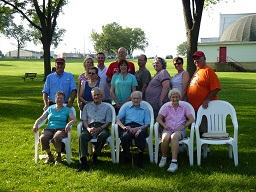
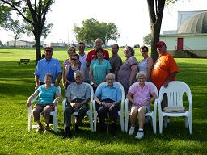
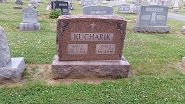
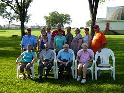
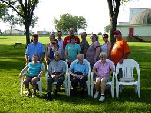

Are you a Kucharik?
Do you know any Kuchariks? Help me fill in the information below! Who are your children/parents/siblings?
Who knows, you may even find a long-lost relative! I may even be related to you!
Send me any additions/deletions/corrections to: frankk512@gmail.com
New! Looking for any pictures you're willing to share - let's see how much we all look alike!
New! Picture from the August 2012 reunion for my family (descendants of John & Mary), click to expand:
I finally found online Slovakia and Czech Republic telephone listings, so these sections will be growing!
New! Click on the map to add yourself!
To edit the map, you need to sign into or create a Google account, then bring up the map and click 'Edit', then you can add a placemark for your location.
AZ - Arizona
Kucharik David M
Tucson, AZ
(520)258-8319
Children: Kaleb M., Noah Ray
Parents:
Michael
Siblings: June (Kucharik) O'Neal
Kucharik Zolton
13845 E Laurel Ln; Scottsdale, AZ 85259-3737
(480)614-5267
CA - California
Kucharik Bicycle Clothing Inc -
http://kucharik.com
1745 W. 182nd St; Gardena, CA 90248
310-538-4611
Kucharik Deborah
Parents:
John & Martha
Siblings:
John
Email:
qdscent@aol.com
Kucharik James
Irvine, CA 92714
714-552-9124
Kucharik John P
CA
Children: Jennifer, Dana
Parents:
John & Martha
Siblings:
Deborah
Kucharik Kyle
Coronado, CA
Parents:
Steve & Cheryl
Kucharik Nancy J
San Mateo, CA 94403
Kucharik T
Los Angeles, CA 90025
310-820-6437
Kucharik T
Torrance, CA 90501
310-643-9146
Molloy Josette
Marin County, CA
Parents:
Joseph & Elizabeth
Siblings:
Noelle,
Maureen
Email:
jmolloy141@yahoo.com
Gervais Noelle (Molloy/Tisius)
Los Angeles, CA
Daniel Tisius, died 2006
Children: Blair, Claire (Tisius), step daughter: Lauren (Gervais)
Parents:
Joseph & Elizabeth
Siblings:
Josette,
Maureen
Email:
noelle.gervais@lmu.edu
DC - District of Columbia
DE - Delaware
Kucharik Thomas M & Laura (DiTolvo)
19884 Beaver Dam Rd, Lewes, DE 19958
302-249-8830
Children: William Thomas II, Anna Michelle, Elena Marie
Parents:
William & Bridget
Siblings:
William
Website:
www.landscapedelaware.com
Email:
Kucharikfamily@gmail.com
Kucharik William T & Bridget
29065 Lewes-Georgetown Hwy; Lewes, DE 19958
William: died 1996
Children:
William,
Thomas
Parents:
William & Anna
Siblings:
Joseph,
James,
George,
Veronica,
Helen
Kucharik William M
29065 Lewes-Georgetown Hwy; Lewes, DE 19958
302-644-0290
Parents:
William & Bridget
Siblings:
Thomas
FL - Florida
Hersh Jason & Lisa (Kucharik)
Delray Beach, FL
Parents:
Charles and Patricia
Siblings:
Christopher, Jennifer, Kimberly, Andrea
Jacobovitz Donald Darius & Kathy
Palatka, FL
Children: Damien (w/ Jean Summers), Juliet (w/ Jean Summers), Marie (w/ Colleen)
Parents:
George & Dolores
Siblings:
Daniel,
Rainie
James Alexzandria (nee Jacobovitz)
20200 Tamaimi Trail East, Naples, FL 34114
Parents:
Daniel, Michelle Craig
Great Grandparents:
Paul & Julia
Email:
ajames628@hotmail.com
Kucharik Arran
Fort Myers, FL
Parents:
John & Gail
Siblings:
Caitlin
Email:
akooch16@hotmail.com
Kucharik Caitlin
St Augustine, FL
Parents:
John & Gail
Siblings:
Arran
Email:
ckucharik@gmail.com
Kucharik Christopher
510 Asbury Way; Boynton Beach, FL 33426
Parents:
Charles and Patricia
Siblings:
Lisa, Jennifer, Kimberly, Andrea
Kucharik Damian & Gerri (DiBattista)
1652 SW Monarch Club Dr; Palm City, FL 34990
772-286-6718
Parents:
John & Mary
Siblings:
Dorothy,
Denis,
David
Email:
damiankucharik@email.com
Kucharik Edward
Saint Petersburg, FL 33700
813-392-6465
Kucharik Joseph J
N U S Highway 41; Brooksville, FL 34605
352-799-4616
Rambeau David & Judith (Kucharik)
1030 Whispering Cove; Casselberry, FL 32707
Parents:
John & Eleanor
Siblings:
Thomas,
John
Smetana Carl & Louise
Ocala, FL
Children: David, Kathy, Stephen
Parents:
Paul & Julia
Siblings:
Dolores,
Paula
GA - Georgia
Kucharik M
5292 Pass Ct; Sugar Hill, GA 30518-2391
770-932-9112
IL - Illinois
Boyer George
DeKalb, IL and Naples, FL
Parents:
Clara & Carl
Kucharik Jason & Alyson (Hall)
IL
Parents:
Jim & Karen
Siblings:
Rebecca,
Rachael
Kucharik Jeff & Cheryl
1721 Robin Ln; Lisle, IL 60532-2144
630-960-2747
Kucharik John C
5737 N Rogers Ave; Chicago, IL 60646-5958
312-777-6749
Parents:
John
Kucharik Larry & Kitty (Monaghan)
Oak Park, IL
Children: Matthew, Harry
Parents:
William & Wanda
Siblings:
Ronald,
Charles
Email:
Kuchairman@aol.com
Kucharik Milan & Regina
3651 North Nordica; Chicago, IL 60625-5813
312-583-1468
Children:
Matthew,
Kirsten
Kucharik Matthew & Therese
3651 N. Nordica Ave; Chicago, IL
253-427-5877
Army, Active Duty
Children: Sonia, Victoria, Angelica, Alexis
Parents:
Milan & Regina
Siblings:
Kirsten
Kucharik Ronald & Karen (Rowe)
3977 Mill Stone Dr; Springfield, IL 62707
Children:
Katharine
Parents:
William & Wanda
Siblings:
Larry,
Charles
Kucharik Tom & Mary Kathryn
822 Melody Lane; Herrin, IL 62948
Children:
Amy, Laura
Parents:
Thomas & Mildred
Siblings:
Carol
Kucharik William
William - died 11/29/2001
Wanda (Fisher) Walls - River Forest, IL
Children:
Larry,
Ronald,
Charles
Parents:
Andrew & Anna
Schaley (Kucharik) Carol
1106 Coldspring Rd.; Elgin, IL 60120
Children: Evin, Brin, Joel, Kera
Parents:
Thomas & Mildred
Siblings:
Tom
Tibensky (Kucharik) Mildred
IL
Children: John (Oak Park, IL), Deborah (Hudson, NY), Corinne (Cory) (Tucson, AZ)
Parents:
Jon & Julia
Siblings:
Tom,
John,
George,
Theresa
IN - Indiana
Kucharik Mary
801 21st St SW; Demotte, IN 46310-9212
219-987-4746
Children:
Katharine
Kucharik Nathan & Linsey (Persyn)
1209 Kossuth St, Lafayette, IN 47905
Children: Elouise Joy (Ellie), Adelaide Jude (Aidy)
Parents:
Tom & Ellen
Siblings:
Jana, Mitchell
Richardson Katharine (Kucharik)
6125 N Park Ave; Indianapolis, IN 46220
Parents:
Ronald &
Mary
KS - Kansas
Kucharik Steve and Cheryl (Stewart)
102 Westview; Scott City, KS 67871
620-872-2517
Children:
Kyle, Aaron, Krista
Parents:
George & Christine
MI - Michigan
Kucharik Judith J
740 Southwood Ct; Rochester Hills, MI 48307-2965
810-651-2882
NC - North Carolina
James Daniel (nee Jacobovitz) & Shretta
Raleigh, NC
Children:
Alexzandria (w/ Michelle Craig), Danielle Alliel Irene (w/ Shretta)
Parents:
George & Dolores
Siblings:
Donald,
Rainie
NJ - New Jersey
Getter Paula Stephanie (Smetana) & Franklin
Phillipsburg, NJ
Paula: died 2025; Frank: died May 22, 2016
Children: Matthew William, Ryan Mitchell
Parents:
Paul & Julia
Siblings:
Dolores,
Carl
Kucharik James David & Diana (Pinkham)
Toms River, NJ
Children: Leah, Sara, Rachel
Parents:
Joseph
Siblings:
Joseph Jr,
Lois
Kucharik John Vincent & Mary
110 Chestnut St; Bridgewater, NJ 08807-2747
908-722-9644
Kucharik Sophia G
58 Maine Ave; Whiting, NJ 08759
908-350-0738
Roncoroni Rainie & James
Lopatcong Township, NJ
Children: Seth, Ian, Faith
Parents:
George & Dolores
Siblings:
Daniel,
Donald
NV - Nevada
Kucharik Edward
Las Vegas, NV 89125
702-735-1357
NY - New York
DeStefano Elena (Tilley) & Robert Jr
2 Russell Dr. #C1; Mineola, NY 11501
516-747-0819
Parents:
Terry & Maureen
Siblings:
Christine
Email:
elena@destefano.us
Cook David
New York City
Parents:
Milan & Hilda
Siblings:
Jeremy
Kucharik Frank (Francis) & Ginger (Virginia Heitzman)
25 Snyder Circle, Stone Ridge, NY 12484
845-389-1115
Email:
frankk512@gmail.com
Children:
Erin,
Marc,
Jeremy (all w/ Tammy Russell)
Parents:
Joseph & Catherine
Siblings:
Nancy,
Richard,
Joseph Jr,
Joanne,
Thomas,
James
Kucharik Jeremy & Kelsey Reed
Palenville, NY
Parents:
Frank & Tammy Russell
Siblings:
Erin,
Marc
Kucharik Marc & Chelsea Zorn
Ballston Lake, NY
Parents:
Frank & Tammy Russell
Siblings:
Erin,
Jeremy
Tilley Maureen (Molloy) & Terry
Bronx, NY
Maureen: died April 3, 2016
Children:
Elena Marie,
Christine Alexis
Parents:
Joseph & Elizabeth
Siblings:
Josette,
Noelle
Email:
mtilley@fordham.edu
Wu Erin (Kucharik) & Jy-Yeong
Saugerties, NY
Children: Jayden & Ava
Parents:
Frank & Tammy Russell
Siblings:
Marc,
Jeremy
OH - Ohio
Douglas, Lynda (Kucharik)
E 255th St; Euclid, OH
Children: Genevieve, Renée
Parents:
William & Betty
Siblings:
William,
Kay
Dyer Christine (Tilley) & Joshua
North Canton, OH
Children: Jacqueline Addien (3/27/2008)
Parents:
Terry & Maureen
Siblings:
Elena
Email:
CTilley2@neo.rr.com
Herbert Heather (Kucharik) & Michael
49 East Shore Blvd, Timberlake OH 44095
Parents:
William & Lucinda
Siblings:
Brian,
Nathan
Kucharik Brian & Kristen (Cooper)
4417 Wood St; Willoughby, OH 44094
Children: Megan and Madeline Cooper
Parents:
William & Lucinda
Siblings:
Heather,
Nathan
Email:
bckucharik@yahoo.com
Kucharik Charles W & Patricia (Klimaski)
4928 Norquest Blvd; Youngstown, OH 44515
330-799-7741
Children:
Lisa Marie,
Christopher William, Jennifer Lynne, Kimberly Ann, Andrea Louise
Parents:
William & Wanda
Siblings:
Ronald,
Larry
Kucharik Chris
Children: Zachary Christopher, Andrew Henry (2/28/2011), Addison Kathleen (3/17/2015)
Parents:
Joseph & Teresa
Siblings:
Adam
Email:
chriskucharik@hotmail.com
Kucharik Edward
5090 Elyria Ave; Lorain, OH 44055-3109
216-233-5378
Kucharik Erica
1305 Bobby Ln; Westlake, OH 44145-6916
440-808-0098
Kucharik John Mark & Gail
7101 Bramshill Circle; Chagrin Falls, Ohio 44023
440-708-2614
Email:
jmkucharik@aol.com
Children:
Arran,
Caitlin
Parents:
John & Eleanor
Siblings:
Thomas,
Judi
Kucharik John & Nancy
7915 Cemetery Rd; Vermilion, OH 44089-9593
216-967-7231
Children: Erica, Sherry (Hunter)
Parents:
Ray & Rita
Siblings: Rita Jean Bursley, Pamela Bales,
Mike, Julie Shullick
Kucharik Kay E
19220 Stafford Ave; Cleveland, OH 44137-2336
216-475-9546
Parents:
William & Betty
Siblings:
William,
Lynda
Kucharik Nathan
3274 Scranton Rd; Cleveland Ohio 44109
Parents:
William & Gretchen Phillips
Siblings:
Heather,
Brian, Damian
Kucharik Ray & Rita
4645 W River Rd; Wakeman, OH 44889-9225
216-839-2855
Children:
John, Rita, Pamela,
Mike, Julie
Siblings: Virginia Gonos, Edward
Kucharik William Paul Sr
Stratford Commons Nursing Home 7000 Cochran Road; Glenwillow, OH 44139
440-914-0900
Betty: died March 2005
Children:
William,
Lynda,
Kay
Parents:
Paul
Kucharik William Paul Jr
33889 Lawton Ave; Eastlake, OH 44095
440-953-2454
Children:
Heather,
Brian,
Nathan
Parents:
William & Betty
Siblings:
Lynda,
Kay
Soergel Gary & Lois Anne (Kucharik)
5602 Monica Dr; Fairfield, OH 45104
513-829-1350
Children: Jessica, Jarad, Cathlee
Parents:
Joseph
Siblings:
Joseph Jr,
James
OR - Oregon
Kucharik Chris & Polli
927 NE Savage St; Grants Pass, OR 97526-1341
541-471-0218
Children: Nicholas, Susanna
Parents:
Paul & Mary
Siblings:
Kathleen,
Joan
Kucharik John & Ann
6431 Fairway Ave SE; Salem, OR 97306-1426
503-363-0954
Children:
Ronald
Siblings: Mamie Doven
Kucharik Ronald J & Janet
4941 Jones Rd Se; Salem, OR 97302-4834
503-585-5998
Children: Kristin Horton, Ronda Atwood, Lara Paustian
Parents:
John & Ann
PA - Pennsylvania
Bowers Rachael & Brian
1639 Beech Lane, Macungie, PA 18062
Children: Aesun Scott (5/9/2008), Morgan Catherine (1/22/2011)
Parents:
Jim & Karen
Siblings:
Rebecca,
Jason
Burian Suzanne (Kucharik) & Gerald
424 N. 22nd Street, Allentown, PA 18104
610-437-0491
Children: Patricia, Michael, Linda, Allison
Parents:
Michael & Althea
Siblings:
Mary
Burruss Jana (Kucharik) & Brian
1030 Shenk Ave, Erie, PA 16505
Children: Luke, Grace
Parents:
Tom & Ellen
Siblings:
Nathan,
Mitchell
Cumello Heather (Laudenslager) & Jason
Macungie, PA
Children: Lydia, Landon Connor (6/22/2013)
Parents:
Ray & Joanne
Ray: deceased
Siblings: Jonathan,
Scott,
Shawn, Patrick
Kucharik Brian & Marissa
5 Sleighride Dr; Glen Mills PA 19342
Children: Emily (with Melissa), Madison, Julia
Parents:
Richard & Brenda
Siblings:
Eric
Email:
Brian.Chook@gmail.com
Kucharik Chris
110 3rd Ave; Phoenixville, PA 19460-3838
610-935-4483
Kucharik Denis P
58 Skyline Dr; Audubon, PA 19403-2062
610-666-0439
Parents:
John & Mary
Siblings:
Dorothy,
David,
Damian
Kucharik Donald
516 Bridge St; Mont Clare, PA 19453
610-933-4757
Parents:
Frank
Siblings:
Robert
Kucharik-Fedick Dorothy
114 Starr St; Phoenixville, PA 19460
610-933-5476
Children: Christina Lopenzina, Victoria Marchegiano, Mark Fedick, Brian Fedick
Grandchildren: Vanessa and Valerie Lopenzina, Anthony and Adria Marchegiano, Justin and Lauren Fedick, Brian Joseph Fedick
Parents:
John & Mary
Siblings:
Damian,
David,
Denis
Email:
dottiefedick@gmail.com
Kucharik Eric & Stacey (Frank)
Married 2/9/2008
1001 Runaway Dr; Pennsburg PA 18073
Children: William Frank (2/14/2012), Charlotte Mary (9/22/2014), Aaron Richard (3/29/2016), Elliott James (3/29/2016)
Parents:
Richard & Brenda
Siblings:
Brian
Kucharik James R & Millie
25 Marian Rd; Phoenixville, PA 19460-2930
610-933-6448
Children:
Richard,
James
Parents:
William & Anna
Siblings:
William,
Joseph,
George,
Veronica,
Helen
Kucharik James
Phoenixville, PA
Parents:
James & Millie
Siblings:
Richard
OH_
Kucharik Joseph R Sr & Catherine (Bonenberger)
513 1st St; Whitehall, PA 18052
Married: 2/19/1944, Catherine died 5/7/2009, Joseph died 10/29/2018
Children:
Nancy,
Richard,
Joseph Jr,
Joanne,
Thomas, Catherine,
James, Michael,
Francis
Parents:
John & Mary
Siblings:
Josephine,
Julia,
Anastasia,
Michael,
John,
Elizabeth,
Mary,
Paul,
Stephen

 
(Click to view larger picture)

(Click to view larger picture)
Kucharik Joseph R Jr & Teresa (Adamiak)
421 Chestnut Way; New Cumberland, PA 17070
717-712-3497
Email:
josephkucharik@gmail.com
Children:
Christopher,
Adam
Parents:
Joseph & Catherine
Siblings:
Nancy,
Richard,
Joanne,
Thomas,
James,
Frank
Kucharik Lisa M
906 Valley Forge Rd; Phoenixville, PA 19460-2654
610-933-4322
Parents:
George & Betty
Siblings: Gary, George Jr.
Kucharik Mitchell
4901 Sutton Pl Ext, Wexford, PA 15090
724-713-2145
Parents:
Tom & Ellen
Siblings:
Jana,
Nathan
Kucharik Nancy T
513 1st St; Whitehall, PA 18052
Parents:
Joseph & Catherine
Siblings:
Richard,
Joseph Jr,
Joanne,
Thomas,
James,
Frank
Kucharik Richard J & Brenda (Reinert)
9341 Newtown Rd; Breinigsville, PA 18031-1809
610-349-6217
Children:
Brian,
Eric
Parents:
Joseph & Catherine
Siblings:
Nancy,
Joseph Jr,
Joanne,
Thomas,
James,
Frank
Email:
kucharik@msn.com
Kucharik Richard A & Susan (Crone)
Phoenixville, PA
Parents:
James & Millie
Siblings:
James
Kucharik Thomas J & Ellen (Headland)
5990 Pebble Creek Drive, Fairview, PA 16415
724-713-3145
Children:
Jana,
Nathan,
Mitchell
Parents:
Joseph & Catherine
Siblings:
Nancy,
Richard,
Joseph Jr,
Joanne,
James,
Frank
Email:
tkucharik@gmail.com
Laudenslager Joanne M (Kucharik) & Ray
728 Washington St; Allentown, PA 18102
484-294-8077
Children: Jonathan,
Heather,
Scott,
Shawn, Patrick
Parents:
Joseph & Catherine
Siblings:
Nancy,
Richard,
Joseph Jr,
Thomas,
James,
Frank
Email:
jlaudenslager@gmail.com
Laudenslager Scott & Samantha (Walls)
Allentown, PA
Married: Sept 20, 2009
Children: Sophia Elizabeth (12/13/2011)
Parents:
Ray & Joanne
Siblings: Jonathan,
Heather,
Shawn, Patrick
Laudenslager Shawn & Nicole (Wolk)
Flourtown, PA
Married: May 9, 2009
Children: Hailey (4/13/2012), Claire Avery (2/6/2014)
Parents:
Ray & Joanne
Siblings: Jonathan,
Heather,
Scott, Patrick
Maroski John & Mary Louise (Kucharik)
Bethlehem, PA
Children: Lisa (Elizabeth), Kevin
Parents:
Michael & Althea
Siblings:
Suzanne
Email (Lisa):
lisa.maroski@mindspring.com
Rubert Rudy & Helen (Kucharik)
Gilbertsville, PA
Rudy: died July 2002
Children: Robert, Kathy, Victoria
Parents:
William & Anna
Siblings:
William,
Joseph,
James,
George,
Veronica
Wojton Peter & Veronica (Kucharik)
Pottstown, PA
Parents:
William & Anna
Siblings:
William,
Joseph,
James,
George,
Helen
TN - Tennessee
Confer Rebecca (Kucharik)
6255 Creekside Lake Drive, Arlington, TN 38002
Married: December 29, 2009
Children: Damian, Ethan, Autumn Makena (12/18/2012), Chase
Parents:
Jim & Karen
Siblings:
Jason,
Rachael
Kucharik James T & Karen (Newhart)
12131 Chapel Meadow Ln, Lakeland, TN 38002
Children:
Rebecca,
Jason,
Rachael
Parents:
Joseph & Catherine
Siblings:
Nancy,
Richard,
Joseph Jr,
Joanne,
Thomas,
Frank
Email:
jkucharik@hotmail.com
TX - Texas
Kucharik Michael J
14331 Santiesteban Ln; El Paso, TX 79938-9485
915-857-0517
Children:
David, June
Parents:
Ray & Rita
VA - Virginia
Robbins Kirsten (Kucharik) & Jordan
1914 North Daniel St; Arlington, VA
Children: Leah
Parents:
Milan & Regina
Siblings:
Matthew
WA - Washington
Bykonen Joan (Kucharik)
Parents:
Paul & Mary
Siblings:
Kathleen,
Christopher
Kucharik Paul & Marla
Poulsbo, WA 98370
(360)697-2558
Kucharik Paul G. & Mary (Bonenberger)
389 Summit Loop; Grants Pass, OR 97527-8971
Both deceased
Children:
Kathleen,
Joan,
Christopher
Parents:
John & Mary
Siblings:
Josephine,
Julia,
Anastasia,
Michael,
John,
Elizabeth,
Mary,
Joseph,
Stephen
Email:
jubal1919@earthlink.net
WI - Wisconsin
Kucharik Chris J
6910 Mill Bluff Dr; Madison, WI 53718-3214
608-223-5649
Kucharik J
W 165 N 10217 Wagon Tr; Germantown, WI 53022
414-251-5637
Kucharik John & Judy
5625 Kengary Ct; Slinger, WI 53086-9539
414-644-8807
Kucharik Matt & Kelly M
N88W15935 Park Blvd; Menomonee Falls, WI 53051-2948
(262)251-5110
Kucharik Michael A
5398 Cascade Dr; West Bend, WI 53095-9757
414-675-2435
Kucharik Marion
7530 N Port Washington Rd; Milwaukee, WI 53217-3421
414-351-6616
Kucharik Nancy J
1192 Lowell Dr; Oconomowoc, WI 53066-4368
(262)567-6066
Kucharik Scott
12276 S Plummer Lake Ln; Lac Du Flambeau, WI 54538-9793
(715)588-7273
Kucharik Steven J
2440-a S 62nd St; Milwaukee, WI 53219
414-543-8016
Australia
Kucharik Jonas
Lot 17 Kurts Road; Bilpin; NS 2758
Canada
Kucharik B
1829 Des Arbres St; Orleans, Ontario K1E 2T7
(613)824-8257
Kucharik Charles
253 Ch Calumet; Bryson, Quebec J0X 1H0
(819)648-5502
Kucharik Donald and Kathleen (Godin)
828 Clarendon St; Bryson, Quebec J0X 1H0
(819)648-5809
Children: Dwight (Chantelle), Mark, Mishka, Josh
Parents: Michael and Celina (Newberry)
Siblings: Raymond, Charlie, Jimmy, Brenda
Kucharik Michael & Jennifer
261 Harrington St; Arnprior, Ontario K7S 2T8
(613)623-9112
Czech Republic
Online telephone records: http://phonebook.quick.cz
Kucharik Milan and Blanka
Hradec Kralove, Czech Republic
Children: Philip, Milan
Germany
Kucharik Pavel & GudrunSchulstr 53; 89291; Holzheim
Children: Marian, Laura
Email:
pgkute@rbmail.de
Malta
Kucharik Milan & LudmilaChildren:
Irena, Daniela
Parents:
Josef
Mexico
Sotelo Jose Luis & Ana Maria (Kucharik)Children: Daniel
Parents:
Rudolf
Russia
Kucharik, A.V.
Saratov, Barnaulskaya, 8
+7-(845-2)-44-57-88
Slovakia
Online telephone records: http://www.zoznamst.sk
Kucharik JosefBratislava, Slovakia
Children:
MilanParents:
JozefSiblings: Zdenek, Vladimir
Kucharík PeterPlevník - Drienové, Slovakia
Parents: Milan & Helena
Siblings: Milan, Roman, Andrea
Email:
kucharik.p@zmail.sk
South Africa
Kucharik Horst Stefan Eduard & June (Wilson)Johannesburg
Horst: b 7/21/1944 Ebreichsdorf, Austria
June: b 8/21/1946 Widnes, England
Married 12/23/1971 (South Africa)
Children:
Tanja,
StefanParents:
Eduard & AnnaSiblings:
Alfred,
Ingrid
Switzerland
Kucharik Jaraslav
bd de Grancy 35; 1006; Lausanne; Waadt
United Kingdom
Kucharik Jan1 Morval Road; Nottingham, Notts, NG8 4FG
Jan born: 2/14/1923 in Krhov, Czech
Parents:
Leopold & AnastassiaSiblings: Anastassia, Maria, Leopold, Josef
Kucharik Stefan Eduard & Elizabeth (Lima) (3/07/1974)
Wimbledon, London
Stefan: b 3/7/1974 Johannesburg, South Africa
Elsie Elizabeth: b 1/23/1973 Johannesburg, South Africa
Married 10/21/2006 (London)
Children: Michaela Lee (b 8/14/2006 London), Marcus Stefan (b 2010 London)
Parents:
Horst and JuneSiblings:
TanjaEmail:
skucharik@yahoo.co.uk
Zambia
Lowry Irena (Kucharikova)Chisamba, Zambia
Parents:
Milan & LudmilaChildren: Oskar, Josef
Siblings: Daniela
Deceased
Boyer Clara Anna (Heilenbach) & Carl WLoda, IL
Children:
GeorgeParents:
Rose & Nicholas
Heilenbach Rose (Kucharik) & NicholasBohemian National Cemetery, Chicago, IL
Children:
Clara
Herega Josephine (Kucharik) & JohnPerth Amboy, NJ
Josephine: 2/26/1904-6/2000, John: 3/10/1905-3/4/1950
Children: Mary, Johanna, John Jr.
Parents:
John & Mary
Jacobovitz DoloresNJ
3/23/1932 - 10/14/2014
Husband: George, died 2/24/1961
Children:
Daniel,
Donald,
RainieParents:
Paul & JuliaSiblings:
Carl,
Paula
Kucharik John Stephen & Mary Rose (Katerinec)John: 6/4/1878-3/12/1943, Mary: 3/23/1884-2/12/1956
Children:
Josephine,
Julia,
Anastasia,
Michael,
John,
Elizabeth,
Mary,
Paul,
Joseph,
Stephen

Kucharik William & Anna May (Ocelka)William: 6/21/1896-11/27/1993, Anna: 11/22/1895-4/04/1988
Children:
William,
Joseph,
James,
George,
Veronica,
Helen
Kucharik John J. Rev & Eleanor MOviedo, FL
John: Jan 29, 1917 - Nov 4, 2001
Eleanor: died Dec 14, 2000
Children:
Thomas,
John,
JudiParents:
Joseph & Ludmila
Kucharik John F & Martha (Podraza)Torrance, CA
John (6/7/1914-3/12/2008), Martha (8/25/1916-8/1/2001)
Children:
John,
DeborahParents:
John & Mary
Kucharik Stephen C & Teresa (Ettl)Lancaster, CA
Stephen: 9/22/1924-3/6/2008, Teresa: 4/26/1921-1/1983
Children:
Linda,
(Lois) AnnParents:
John & Mary
Molloy Elizabeth (Kucharik) & JosephElizabeth: 8/22/1916-9/12/1994, Joseph: 3/6/1916-8/28/1976
Children:
Josette,
Noelle,
MaureenParents:
John & Mary


Smetana Julia V (Kucharik) & PaulAlpha, NJ
Julia (4/27/1910-3/11/2006), Paul (6/13/1908-12/18/1983)
Children:
Dolores,
Carl,
PaulaParents:
John & Mary
Smally Anastasia B (Kucharik) & JohnAnna (7/13/1911-?/2005), John (4/10/1900-7/12/1966)
Children: Ronald, John Jr
Parents:
John & Mary
Menges Paul & Mary R (Kucharik)Allentown, PA
Mary Rose (12/6/1917-2/27/2002), Paul (11/16/1915-6/30/1983)
Children: Mary Ann, Paul, Jeannette, Robert, Donna, Phillip, Karen
Parents:
John & Mary
Kucharik Michael S & Althea (Semmel)4548 Daisy Ave; Orefield, PA 18069-2422
Althea (5/14/1912-4/15/2001)
Children:
Suzanne,
Mary LouiseParents:
John & Mary
Kucharik George S & Betty9 Merion Terrace; Phoenixville, PA 19460
George: died 2010, Betty: died 8/18/2001
Children: Gary, George Jr.,
LisaParents:
William & Anna
Kucharik Joseph J. Rev & Ludmila (Stepita)Joseph: 10/10/1886-9/12/1965, Ludmila: 10/28/1894-1/5/1988
Children:
John, Olga, Emilia,
Joseph,
Milan, Judith

Kucharik Joseph Daniel Rev (?-7/1999)
Clark, NJ 07066
Children:
Joseph Jr,
James,
LoisParents:
Joseph & Ludmila
Kucharik John & Mary (Yurcak)Phoenixville, PA
John (10/25/1902-1/26/1990)
Children:
Dorothy,
Denis,
David,
Damian
Kucharik David (12/07/1936-4/1981)Phoenixville, PA 19460
Parents:
John & MarySiblings:
Dorothy,
Denis,
Damian
Kucharik Joseph C & Mary Jane (Henke)Joseph: died 11/21/2003, age 83
Children:
Michael,
JosephParents:
William & Anna
Kucharik MichaelStowe, PA
Parents:
Joseph & Mary JaneSiblings:
Joseph
Kucharik George & Christine (Havlik)George: 6/06/1908-2/14/1978, Christine: died 11/5/96
Children:
Steve
Kucharik Andrew & AnnaAndrew 3/03/1889-12/1964, Anna 4/9/1895-1952
Children:
William
Kucharik Thomas & MildredArlington, IL
Thomas (?-6/1996), Mildred (9/17/1915-11/1969)
Children:
Carol,
TomParents:
Jon & Julia
Kucharik Jon & JuliaIL
Children:
John,
George,
Thomas,
Theresa,
Mildred
Kucharik JohnIL, died 1960's
Children:
JohnParents:
Jon & Julia
Kucharik George (? - 1943)
IL, died and buried in France, WW2
Parents:
Jon & Julia
Kucharik TheresaIL, (? - 1970's)
Parents:
Jon & Julia
Stevens (Lois) Ann (Kucharik)born: 12/5/1954, died: 7/28/2000 Hillsboro, OR
Parents:
Stephen & TeresaSiblings:
Linda
Kucharik Eduard & Aloisa (Fischer)Austria
Eduard: b 9/14/1877 Priluk, Aloisa b 7/1/1884 Ober Eggendorf
Children:
Eduard, Karl, Alfreda, Herta, Gretl


 (Click to view larger picture)
(Click to view larger picture)
Kucharik Eduard & Anna Maria (Reider)Austria
Eduard: 11/24/1906-?, Anna: 7/1/1884-7/7/1988
Children:
Alfred,
Horst,
IngridParents:
Eduard & Aloisa


Kucharik Ingrid Marialuise (2/29/1948-4/15/1948)Austria
Parents:
Eduard & AnnaSiblings:
Alfred,
Horst
Kucharik Frank (4/09/1899-9/1951)PA
Children:
Robert,
Donald
Kucharik Robert (3/11/1929-4/1984)Exton, PA 19341
Parents:
FrankSiblings:
Donald
Kucharik Paul (5/01/1900-4/1987)Cleveland, OH 44122
Children:
William
Kucharik Rudolf Oswald (??-1985)born in Czechoslovakia, moved to Vienna, Austria, died in Mexico City
Children:
AnaSiblings:
Willhelm,
Alfred
Kucharik WillhelmVienna, Austria
Siblings:
Rudolf,
Alfred
Kucharik Leopold & AnastassiaCzechoslovakia
Children:
Jan, Anastassia, Maria, Leopold, Josef
Kucharik JozefChildren:
JosefSiblings: Dezider, 11 others

 
